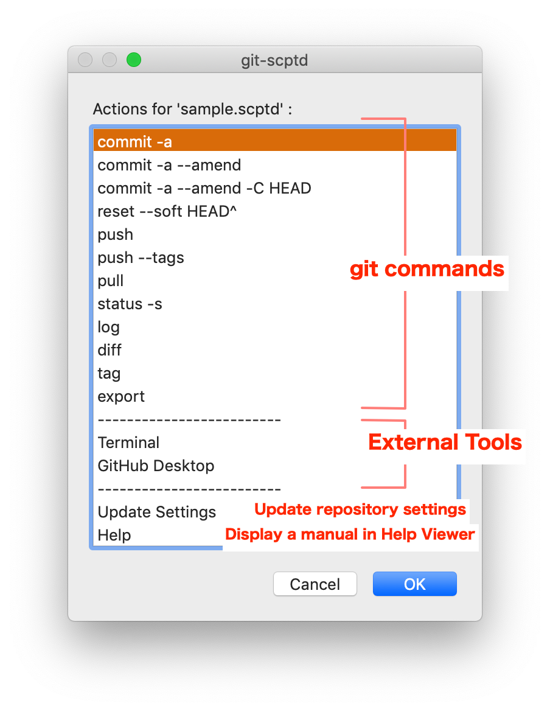
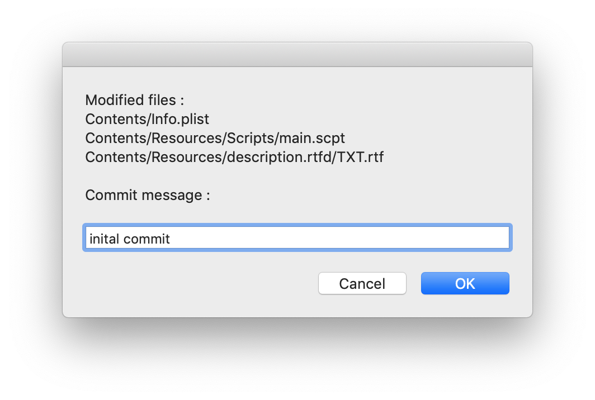
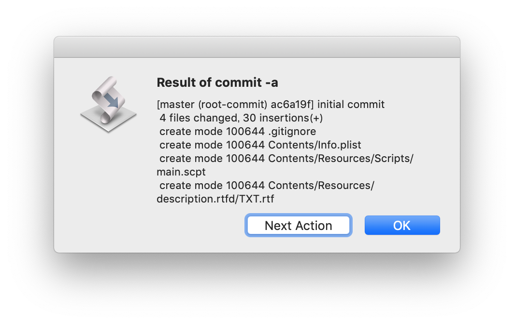

After creating a repository, following dialog will be displayed.

In this dialog, choosing "commit -a" cause displaying the dialog to enter a commit message.


Pressing the "OK" button cause quitting "git-scptd". Pressing "Next Action" button cause displaying the command menu for the next action.
Almost commands listed abeve the separator "----" are performed with the following form.
git <command>
The "export" command cause making a copy of the files in the woking tree with performing the following git command.
git checkout-index -a -f
The destination of the copy will be asked by the file save dialog.